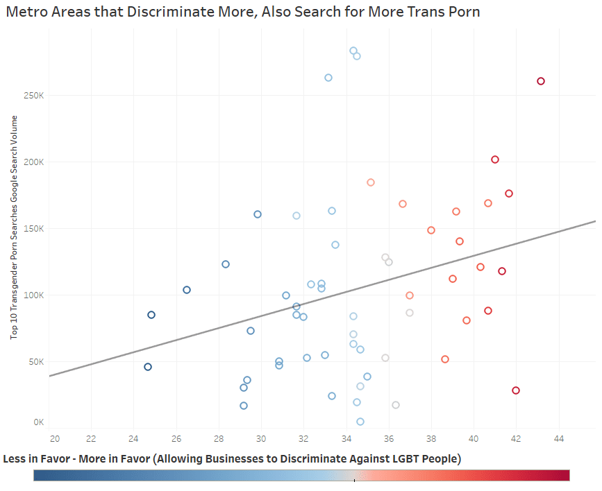

愿晚星照常升起（keep4o）
@tadatsukiei
@KiraMyao @ValeriaEulabeia 大概是因为跨性别被歧视排挤会更有利于他们实施性骚扰和猥亵吧。

KiraMyao🐱
@KiraMyao
“大头反跨，小头不反跨”*
这一调查令人联想到在中国那些反对性别平权满嘴跑火车的人是否也是痴迷各类色情内容的性压抑群体？
*越是反对lgbt的人 可能越喜欢看跨性别色情内容 lawsuit在2022年收集了美国支持企业拒绝为LGBT人群提供服务 和 这些区域Google搜索跨性别色情内容的数据 https://t.co/exAhH4pXaY